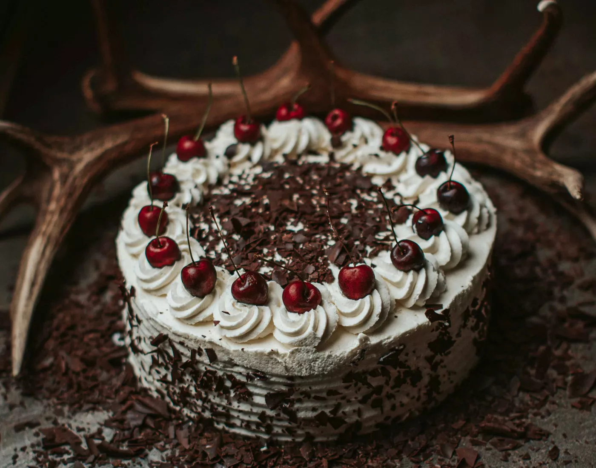
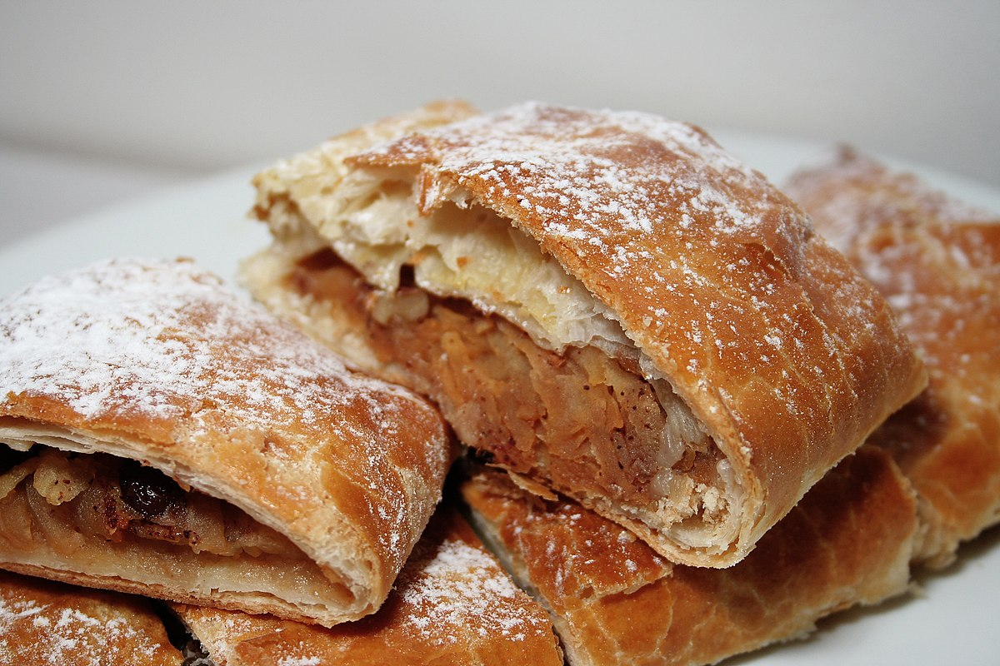
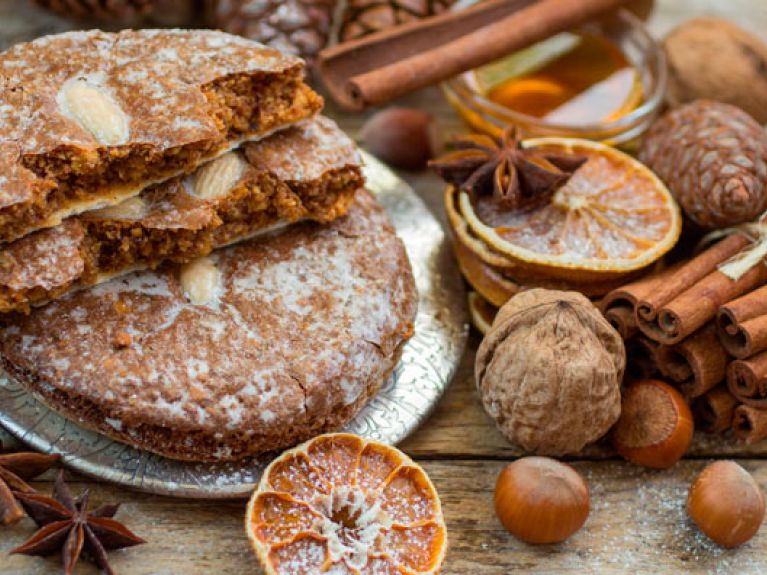

|

Bolo Floresta Negra Um clássico alemão feito com camadas de bolo de chocolate úmido, chantilly fresco, cerejas e um toque de licor de cereja (Kirschwasser), finalizado com raspas de chocolate. R$16,99/fatia |

Strudel de Maçã Uma massa folhada finíssima recheada com maçãs, açúcar, canela, passas e às vezes nozes, assada até dourar e tradicionalmente servida com chantilly ou sorvete. R$8,99/un |

Biscoitos Alemães Biscoitos macios com sabores ricos de especiarias como canela, cravo e gengibre, frequentemente cobertos com glacê ou chocolate e populares durante o Natal. R$30,57/caixa |
|
Sonhos de Geleia Sonhos macios e fritos, recheados com geleia de frutas ou creme e polvilhados com açúcar de confeiteiro. Uma delícia encontrada em padarias por toda a Alemanha. R$6,50/un |
Bolo Picada de Abelha Bolo fermentado com uma cobertura crocante de amêndoas caramelizadas, recheado com creme de baunilha ou chantilly, perfeito para acompanhar um café. R$18,99/fatia |
Pão Doce Natalino Pão doce enriquecido com frutas secas, especiarias e marzipã, polvilhado generosamente com açúcar de confeiteiro. É uma tradição natalina alemã. R$15,99/kg |
|
Cheesecake Alemão Uma versão alemã do cheesecake feita com quark (um tipo de queijo fresco) que lhe dá uma textura leve e cremosa, geralmente servida sem cobertura. R$12,00/fatia |
Frutas Vermelhas Uma sobremesa tradicional do norte da Alemanha feita com uma mistura de frutas vermelhas (como morangos, framboesas, cerejas e groselhas) cozidas com açúcar e engrossadas com amido. Geralmente é servida com creme de leite, creme inglês ou sorvete. R$15,99/un |
Bolo Árvore Um bolo sofisticado feito em camadas finas que são assadas individualmente e criam um padrão anelar que lembra os anéis de uma árvore. É frequentemente coberto com chocolate ou açúcar de confeiteiro. Este doce é símbolo de celebrações e tradição. R$16,99/fatia |